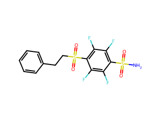
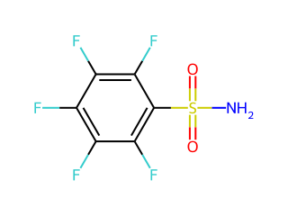
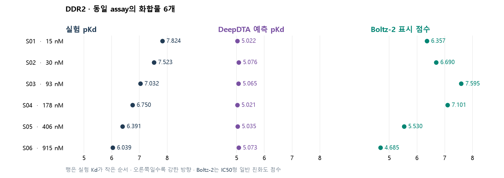
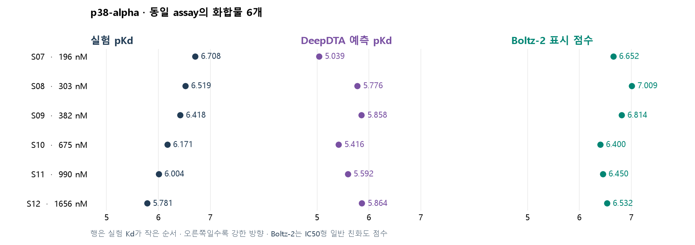
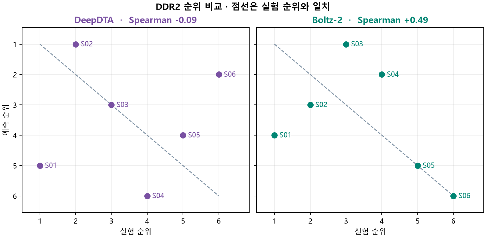
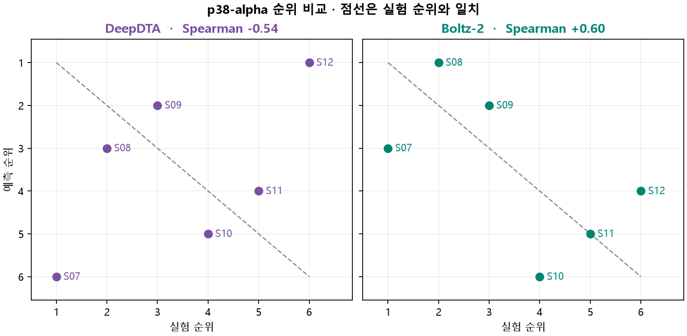

L01CHEMBL2333406
L01CHEMBL2333406비교 지표
| 타겟 | 모델 | Spearman ρ ↑ 강약 순서 | Pearson r ↑ 선형적 변화 추세 |
|---|---|---|---|
| CA1 | DeepDTA | 0.257 | -0.030 |
| CA1 | Boltz-2 | 0.657 | 0.926 |
| CA13 | DeepDTA | -0.314 | -0.299 |
| CA13 | Boltz-2 | 0.943 | 0.983 |
- 두 지표 범위: −1 ~ +1 · 상관 0.943은 정확도 94.3%라는 뜻이 아님
실험 1 · CA1·CA13 / 실험 2 · DDR2·p38α
잔기: 단백질 사슬을 이루는 아미노산 단위
pKd = 9 − log₁₀(Kd[nM]) · nM: 나노몰/리터
L01CHEMBL2333406
L02CHEMBL2333407 L03CHEMBL2333398
L03CHEMBL2333398 L04CHEMBL2333408
L04CHEMBL2333408
L05CHEMBL2333413 L06CHEMBL106848
L06CHEMBL106848도식 범위: 계산 경로 설명 · 실제 단백질 형상의 묘사·이번 작업의 신규 학습 과정 아님
| 항목 | DeepDTA | Boltz-2 |
|---|---|---|
| 예측 대상 | 같은 12개 단백질–화합물 조합 | |
| 입력 정보 | 서열 + SMILES | 서열 + SMILES + MSA + Zn·접촉 조건 |
| 3D 구조 | 사용·생성 없음 | 복합체 구조 생성·활용 |
| 친화도 출력 | pKd · 큰 값이 강한 결합 | 일반 친화도 점수 · 공식 문서의 IC50형 로그 μM 척도 · 작은 값이 강한 결합 |
| 자료의 표시 방식 | 예측 pKd · 전체 결과표에 역변환한 예측 Kd | 6 − 원출력 · 큰 값이 강한 방향 |
| 추가 학습·보정 | 없음 · 공개 가중치 그대로 추론 | |
| 구분 | 의미·척도 | 이번 비교에서의 역할 |
|---|---|---|
| 실험 Kd / pKd | 평형 결합 세기 / pKd = 9 − log₁₀(Kd[nM]) | 실험 정답 · Kd와 pKd는 정확히 변환 가능한 같은 측정량 |
| IC50 | 반응을 50% 억제하는 농도 · 실험 조건에 의존 | Kd와 다른 측정량 · 농도 단위가 같아도 동일값으로 간주 불가 |
| DeepDTA | DAVIS Kd로 학습한 예측 pKd | 높은 값부터 정렬 · pKd 수치 오차도 계산 가능한 출력 |
| Boltz-2 | Ki·Kd·IC50 등 혼합 측정값으로 학습한 일반 친화도 점수 | 근사적인 IC50형 해석 · 개별 사례의 보정된 Kd와 구분 |
6 − affinity_pred_value · 두 모델 모두 큰 값이 강한 방향단백질: CA1 / UniProt P00915 / 261잔기
서열 시작: MASPDWGYDDKNGPEQWSKLYPIANGNNQSPVDIKTSETKHDTS…
화합물: L04 / CHEMBL2333408
SMILES: NS(=O)(=O)c1c(F)c(F)c(N2CCOCC2)c(F)c1Fforce: true| 타겟 | 모델 | Spearman ρ ↑ 강약 순서 | Pearson r ↑ 선형적 변화 추세 |
|---|---|---|---|
| CA1 | DeepDTA | 0.257 | -0.030 |
| CA1 | Boltz-2 | 0.657 | 0.926 |
| CA13 | DeepDTA | -0.314 | -0.299 |
| CA13 | Boltz-2 | 0.943 | 0.983 |
모바일: 그래프·넓은 표 좌우 스크롤
같은 행: 같은 화합물 · 실험 pKd가 큰 순서로 정렬 · CA1·CA13 선택은 두 그래프에 함께 적용

| 사례 | 대상 | 화합물 | 실험 Kd ↓ nM · 순위 | 실험 pKd ↑ | DeepDTA pKd ↑ · 순위 | DeepDTA 예측 Kd ↓ · nM | Boltz 점수 ↑ 6 − 원출력 · 순위 |
|---|---|---|---|---|---|---|---|
| CA1 | L01 | 0.2 · 2위 | 9.699 | 4.991 · 5위 | 10,200 | 9.075 · 1위 | |
| CA13 | L01 | 0.22 · 1위 | 9.658 | 5.160 · 5위 | 6,923 | 9.357 · 1위 | |
| CA1 | L02 | 0.25 · 3위 | 9.602 | 5.013 · 1위 | 9,710 | 8.889 · 2위 | |
| CA13 | L02 | 0.4 · 2위 | 9.398 | 5.273 · 1위 | 5,331 | 8.911 · 2위 | |
| CA1 | L03 | 0.4 · 4위 | 9.398 | 4.920 · 6위 | 12,030 | 8.444 · 3위 | |
| CA13 | L03 | 2.5 · 3위 | 8.602 | 5.069 · 6위 | 8,526 | 8.701 · 3위 | |
| CA1 | L04 | 0.13 · 1위 | 9.886 | 5.009 · 2위 | 9,784 | 8.396 · 4위 | |
| CA13 | L04 | 25 · 4위 | 7.602 | 5.214 · 4위 | 6,106 | 7.862 · 5위 | |
| CA1 | L05 | 2.2 · 5위 | 8.658 | 4.996 · 3위 | 10,087 | 7.206 · 5위 | |
| CA13 | L05 | 40 · 5위 | 7.398 | 5.216 · 3위 | 6,087 | 7.993 · 4위 | |
| CA1 | L06 | 200 · 6위 | 6.699 | 4.993 · 4위 | 10,153 | 6.324 · 6위 | |
| CA13 | L06 | 1,400 · 6위 | 5.854 | 5.246 · 2위 | 5,674 | 6.420 · 6위 |

아래 MAE는 로그 점수 차이의 평균. Boltz 점수의 물리적 Kd 예측 오차로 간주하거나 두 모델의 Kd 정확도 순위 판정에 사용하지 않음.
| 타겟 | 모델 | 화합물 수 | 원래 MAE 로그 점수 차이 | Pearson r |
|---|---|---|---|---|
| CA1 | DeepDTA | 6 | 4.003 | -0.030 |
| CA1 | Boltz-2 | 6 | 0.935 | 0.926 |
| CA13 | DeepDTA | 6 | 2.889 | -0.299 |
| CA13 | Boltz-2 | 6 | 0.385 | 0.983 |
예측에 해당 assay의 실험 평균 − 예측 평균을 더한 결과. 평가 정답을 사용하므로 새로운 화합물의 독립 보정 성능과 구분.
| 타겟 | 모델 | 원래 MAE | 이동값 | 중심화 MAE |
|---|---|---|---|---|
| CA1 | DeepDTA | 4.003 | +4.003 | 0.880 |
| CA1 | Boltz-2 | 0.935 | +0.935 | 0.364 |
| CA13 | DeepDTA | 2.889 | +2.889 | 1.163 |
| CA13 | Boltz-2 | 0.385 | -0.122 | 0.352 |
DAVIS에 들어 있는 DDR2·p38α · DAVIS의 68개 화합물과 중복되지 않는 후보를 타겟별 6개씩 평가
| 타겟 | 모델 | Spearman ρ ↑ 강약 순서 | Pearson r ↑ 선형적 변화 추세 |
|---|---|---|---|
| DDR2 | DeepDTA | -0.086 | -0.174 |
| DDR2 | Boltz-2 | 0.486 | 0.591 |
| p38α | DeepDTA | -0.543 | -0.493 |
| p38α | Boltz-2 | 0.600 | 0.622 |
모바일에서 그래프와 표는 좌우로 스크롤
같은 행은 같은 화합물 · 실험 pKd와 DeepDTA 예측 pKd, Boltz-2의 IC50형 표시 점수를 나란히 비교


타겟 안에서 1위가 가장 강한 결합 · 반올림 전 점수로 순위 산정
| 사례 | 타겟 | 실험 Kd ↓ nM · 순위 | 실험 pKd ↑ | DeepDTA pKd ↑ · 순위 | Boltz 점수 ↑ 6 − 원출력 · 순위 |
|---|---|---|---|---|---|
| S01 | DDR2 | 15 · 1위 | 7.824 | 5.022 · 5위 | 6.357 · 4위 |
| S02 | DDR2 | 30 · 2위 | 7.523 | 5.076 · 1위 | 6.690 · 3위 |
| S03 | DDR2 | 93 · 3위 | 7.032 | 5.065 · 3위 | 7.595 · 1위 |
| S04 | DDR2 | 178 · 4위 | 6.750 | 5.021 · 6위 | 7.101 · 2위 |
| S05 | DDR2 | 406 · 5위 | 6.391 | 5.035 · 4위 | 5.530 · 5위 |
| S06 | DDR2 | 915 · 6위 | 6.039 | 5.073 · 2위 | 4.685 · 6위 |
| S07 | p38α | 196 · 1위 | 6.708 | 5.039 · 6위 | 6.652 · 3위 |
| S08 | p38α | 303 · 2위 | 6.519 | 5.776 · 3위 | 7.009 · 1위 |
| S09 | p38α | 382 · 3위 | 6.418 | 5.858 · 2위 | 6.814 · 2위 |
| S10 | p38α | 675 · 4위 | 6.171 | 5.416 · 5위 | 6.400 · 6위 |
| S11 | p38α | 990 · 5위 | 6.004 | 5.592 · 4위 | 6.450 · 5위 |
| S12 | p38α | 1656 · 6위 | 5.781 | 5.864 · 1위 | 6.532 · 4위 |
가로축은 실험 순위 · 세로축은 예측 순위 · 점선 위는 두 순위가 같은 경우


실험 정답 출처 · DDR2 assay · p38α assay
두 실험의 네 타겟 모두에서 Boltz-2가 결합 강약 순서를 더 잘 재현
| 실험 | 타겟 | DeepDTA | Boltz-2 |
|---|---|---|---|
| 실험 1 · CA | CA1 | +0.26 | +0.66 |
| 실험 1 · CA | CA13 | -0.31 | +0.94 |
| 실험 2 · 키나아제 | DDR2 | -0.09 | +0.49 |
| 실험 2 · 키나아제 | p38α | -0.54 | +0.60 |
866be98bad0b11e78d4363589b9ee59b5befa307